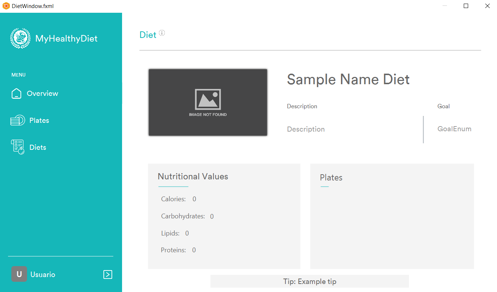

Diet Management: Help
General Description
This window is used to visualize all the data from one diet.
Operations
Open windowsTo open the windows, click on the corresponding button in the application's side menu.
LogoutTo logout, click on the User button next to to the icon at the bottom left of the window, later a menu will be displayed and click Log out button. Confirmation will be requested before log out.
Modify UserTo Modify User, click on the User button next to to the icon at the bottom left of the window, later a menu will be displayed and click Profile button.
Exit AppTo exit the app, click on the X icon in the upper right corner of the window. Confirmation will be requested before exitting the app.
HelpClick on the icon  on the upper left side of the window.
on the upper left side of the window.